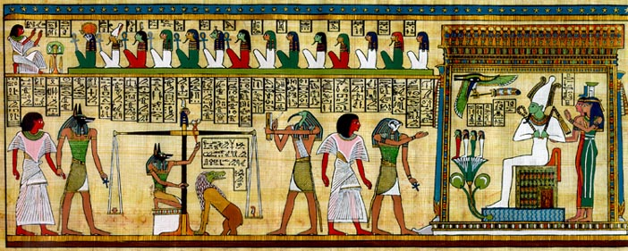

Throughout the chaos of Seth's reign, Isis, Osiris' wife, was working tirelessly to gather up all of the pieces of Osiris' body in order to attempt to put it back together. She did this with the help of her son, Horus, and several other gods. Once all of the pieces were gathered, the gods bound Osiris back together with linen cloth. Thus, Osiris became the first mummy, and this occurence became the basis for the embalming that Egyptians did to their dead. Osiris was successfully resurrected by the gods, specifically Thoth, god of Wisdom, and Anubis, god of funerals. However, Osiris was no longer able to exist on the eartly realm. Instead, he was forced to reside in the Duat, which is the Egyptian analogue to the underworld. Because of this, he was deemed king of the underworld.
